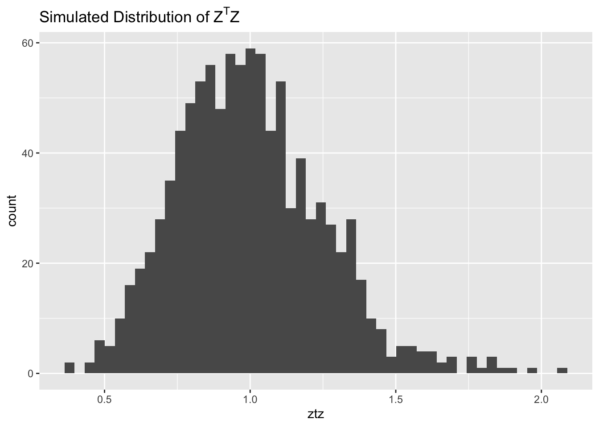
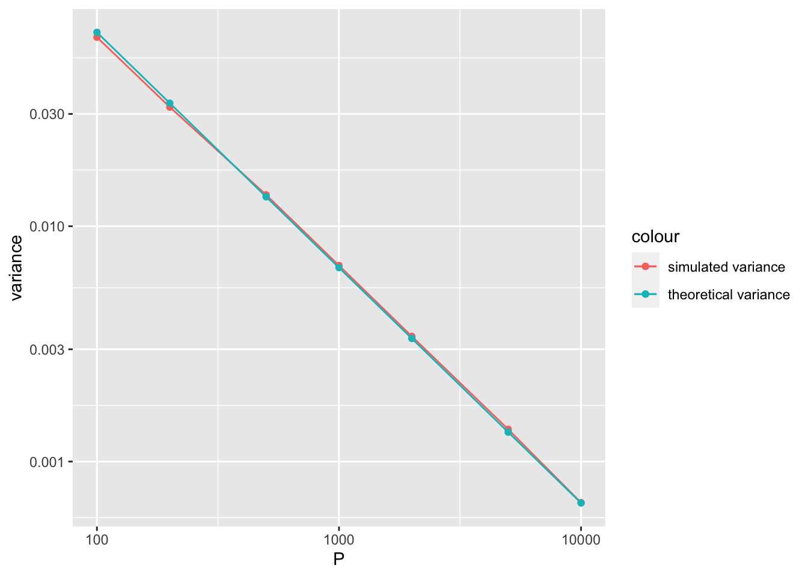

Likelihood Concentration: Random Matrix
Joonsuk Kang
2020-10-10
Last updated: 2020-10-12
Checks: 7 0
Knit directory: mf/
This reproducible R Markdown analysis was created with workflowr (version 1.6.2). The Checks tab describes the reproducibility checks that were applied when the results were created. The Past versions tab lists the development history.
Great! Since the R Markdown file has been committed to the Git repository, you know the exact version of the code that produced these results.
Great job! The global environment was empty. Objects defined in the global environment can affect the analysis in your R Markdown file in unknown ways. For reproduciblity it’s best to always run the code in an empty environment.
The command set.seed(20201010) was run prior to running the code in the R Markdown file. Setting a seed ensures that any results that rely on randomness, e.g. subsampling or permutations, are reproducible.
Great job! Recording the operating system, R version, and package versions is critical for reproducibility.
Nice! There were no cached chunks for this analysis, so you can be confident that you successfully produced the results during this run.
Great job! Using relative paths to the files within your workflowr project makes it easier to run your code on other machines.
Great! You are using Git for version control. Tracking code development and connecting the code version to the results is critical for reproducibility.
The results in this page were generated with repository version e5944a4. See the Past versions tab to see a history of the changes made to the R Markdown and HTML files.
Note that you need to be careful to ensure that all relevant files for the analysis have been committed to Git prior to generating the results (you can use wflow_publish or wflow_git_commit). workflowr only checks the R Markdown file, but you know if there are other scripts or data files that it depends on. Below is the status of the Git repository when the results were generated:
Ignored files:
Ignored: .Rhistory
Ignored: .Rproj.user/
Untracked files:
Untracked: code/code_wflow_publish.R
Untracked: output/GaussianBall.jpg
Untracked: output/LaplacianBall.jpg
Untracked: output/Likelihood.gif
Untracked: writing/
Unstaged changes:
Deleted: analysis/ChoosingW.Rmd
Deleted: analysis/concentration.Rmd
Note that any generated files, e.g. HTML, png, CSS, etc., are not included in this status report because it is ok for generated content to have uncommitted changes.
These are the previous versions of the repository in which changes were made to the R Markdown (analysis/likelihood_rdmatrix.Rmd) and HTML (docs/likelihood_rdmatrix.html) files. If you’ve configured a remote Git repository (see ?wflow_git_remote), click on the hyperlinks in the table below to view the files as they were in that past version.
| File | Version | Author | Date | Message |
|---|---|---|---|---|
| Rmd | e5944a4 | Joonsuk Kang | 2020-10-12 | Likelihood Concentration: Random Matrix |
Introduction
We check the theoretical and simulation results for the probability concentration under the scenario 3: random matrix.
Settings
\[ Z=(z_1,\dots,z_N)^T \sim N(0,\Sigma=\sigma^2(\frac{1}{\delta}+r^2)(kI_N-XX^T)^{-1}). \]
\(k^*\) is chosen to satisfy the moment condition: \[ E[Z^TZ] =\sum_i^N \frac{\sigma^2(\frac{1}{\delta}+r^2)}{k^*-d_i}. \]
Then, we compute the variance: \[ var(Z^TZ) =2\sum_i^N \bigg( \frac{\sigma^2(\frac{1}{\delta}+r^2)}{k^*-d_i} \bigg)^2. \]
Simulation
library(mvtnorm)
library(ggplot2)# define function to run simulation
sim <- function(y, # constant N/P ratio
P, # number of columns of X
sig2, # sigma^2: variance of E_{ij}
delta, # delta: variance of f_j = delta*sigma^2
r2, # r^2
densityplot_eigen=FALSE,
histogram_ztz=FALSE){
N <- y*P
target <- r2/(sig2*(1/delta+r2))
# generate data
X <- matrix(data=c(rnorm(N*P, mean=0, sd=1/sqrt(P))), ncol=P, nrow=N)
Xt <- X%*%t(X) # N x N matrix
d <- eigen(Xt)$values
if(densityplot_eigen==TRUE){
fig1 <- ggplot()+
geom_density(aes(x=d))+
geom_jitter(aes(d,0), height = 0.01)+
ggtitle(expression(paste("Density of eigenvalues ",d[i])))
print(fig1)
}
cond1m <- function(k,d){return(sum(1/(k-d)))} # first moment condition
loss1m <- function(k){return((cond1m(k,d)-target)^2)}
kstar <- optimize(f=loss1m,
interval=c(d[1]+1/target,d[1]+N/target)
# min: d1+1/target (when d1 dominates others)
# max: d1+N/target (when d1=...=dN)
)$minimum
varztz <- 2*(sig2*(1/delta+r2))^2*sum(1/(kstar-d)^2)
# generate z from dist
z <- rmvnorm(n=1000,
mean=rep(0,N),
sigma=sig2*(1/delta+r2)*solve((kstar*diag(N)-Xt))
)
ztz <- rowSums(z^2)
if(histogram_ztz==TRUE){
fig2 <- ggplot()+geom_histogram(aes(x=ztz), bins=50)+
ggtitle(expression(paste("Simulated Distribution of ", Z^T, Z)))
print(fig2)
}
df.result <-
data.frame(theoretical.mean = r2, # theoretical mean and variance of the norm of simulated vectors Z
theoretical.var = varztz,
simulated.mean = mean(ztz), # mean and variance
simulated.var = sd(ztz)^2)
return(df.result)
}The histogram of \(Z^TZ\) for two cases when \(P=100\) and \(P=10000\) are shown.
df.sim <- data.frame(P=c(100,200,500,1000,2000,5000,10000),
theoretical.mean = 0,
theoretical.var = 0,
simulated.mean = 0,
simulated.var = 0
)
for (i in 1:nrow(df.sim)){
df.sim[i,2:5] <- sim(y = 0.3, P = df.sim$P[i], sig2 = 1, delta = 1, r2 = 1,
histogram_ztz=((i==1) + (i==nrow(df.sim))))
}
Results
ggplot(data=df.sim)+
geom_point(aes(x=P, y=simulated.var, col="simulated variance"))+
geom_line(aes(x=P, y=simulated.var, col="simulated variance"))+
geom_point(aes(x=P, y=theoretical.var, col="theoretical variance"))+
geom_line(aes(x=P, y=theoretical.var, col="theoretical variance"))+
scale_x_log10()+
scale_y_log10()+
ylab('variance')
print(df.sim) P theoretical.mean theoretical.var simulated.mean simulated.var
1 100 1 0.0666735045 0.9977174 0.0635619146
2 200 1 0.0333340138 1.0024513 0.0320810106
3 500 1 0.0133333787 0.9983337 0.0135937031
4 1000 1 0.0066666724 1.0021868 0.0068082197
5 2000 1 0.0033333341 1.0010331 0.0034031800
6 5000 1 0.0013333334 1.0002345 0.0013709247
7 10000 1 0.0006666667 1.0016116 0.0006691424
sessionInfo()R version 4.0.2 (2020-06-22)
Platform: x86_64-apple-darwin17.0 (64-bit)
Running under: macOS Catalina 10.15.7
Matrix products: default
BLAS: /Library/Frameworks/R.framework/Versions/4.0/Resources/lib/libRblas.dylib
LAPACK: /Library/Frameworks/R.framework/Versions/4.0/Resources/lib/libRlapack.dylib
locale:
[1] en_US.UTF-8/en_US.UTF-8/en_US.UTF-8/C/en_US.UTF-8/en_US.UTF-8
attached base packages:
[1] stats graphics grDevices utils datasets methods base
other attached packages:
[1] ggplot2_3.3.2 mvtnorm_1.1-1 workflowr_1.6.2
loaded via a namespace (and not attached):
[1] Rcpp_1.0.5 pillar_1.4.6 compiler_4.0.2 later_1.1.0.1
[5] git2r_0.27.1 tools_4.0.2 digest_0.6.25 evaluate_0.14
[9] lifecycle_0.2.0 tibble_3.0.3 gtable_0.3.0 pkgconfig_2.0.3
[13] rlang_0.4.7 rstudioapi_0.11 yaml_2.2.1 xfun_0.18
[17] withr_2.3.0 stringr_1.4.0 dplyr_1.0.2 knitr_1.30
[21] generics_0.0.2 fs_1.5.0 vctrs_0.3.4 tidyselect_1.1.0
[25] rprojroot_1.3-2 grid_4.0.2 glue_1.4.2 R6_2.4.1
[29] rmarkdown_2.4 farver_2.0.3 purrr_0.3.4 magrittr_1.5
[33] whisker_0.4 backports_1.1.10 scales_1.1.1 promises_1.1.1
[37] ellipsis_0.3.1 htmltools_0.5.0 colorspace_1.4-1 httpuv_1.5.4
[41] labeling_0.3 stringi_1.5.3 munsell_0.5.0 crayon_1.3.4